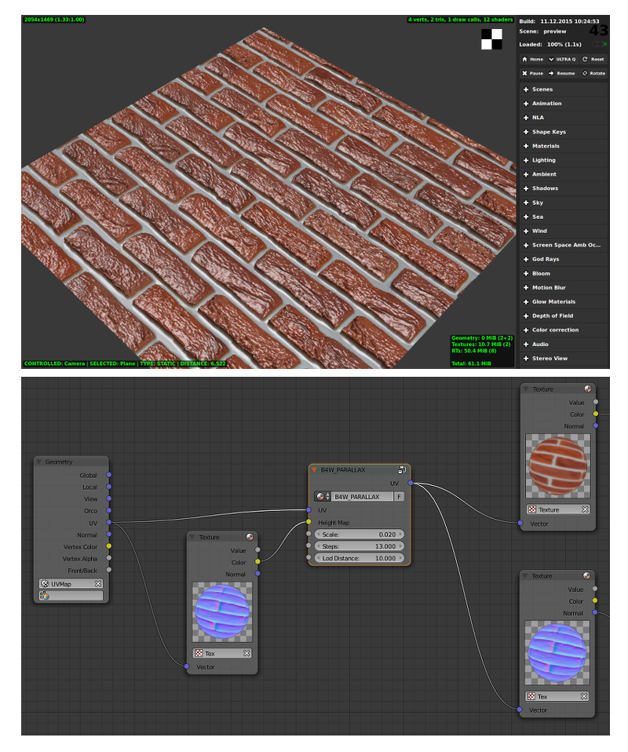
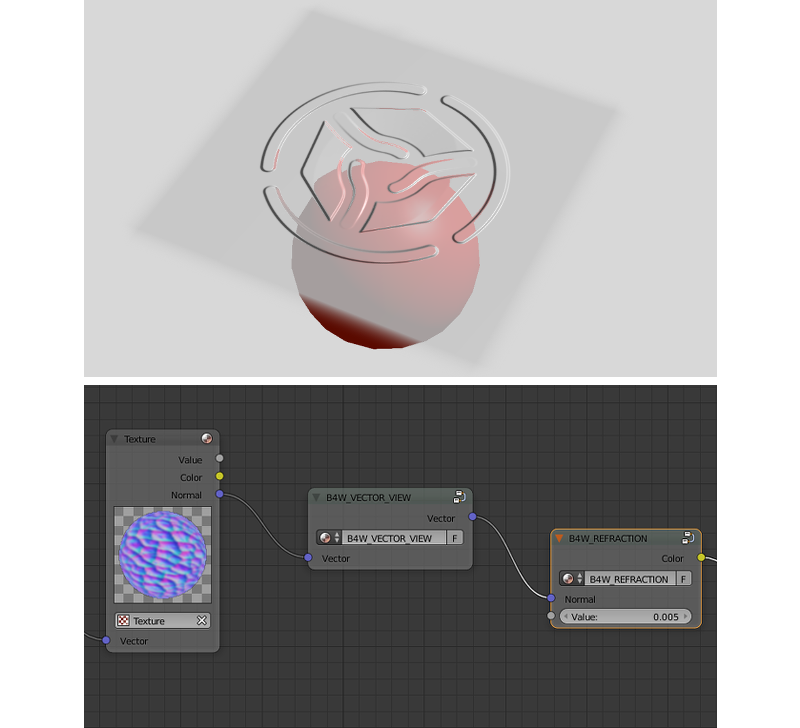
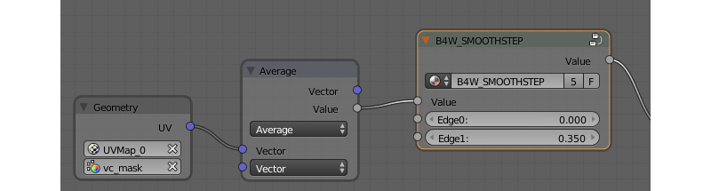

Node Materials¶
Table of Content
- Node Materials
- Standard Nodes
- Engine-Specific Nodes
- Clamp (B4W_CLAMP)
- Glow Output (B4W_GLOW_OUTPUT)
- Levels of Quality (B4W_LEVELS_OF_QUALITY)
- Parallax (B4W_PARALLAX)
- Reflect (B4W_REFLECT)
- Refraction (B4W_REFRACTION)
- Replace (B4W_REPLACE)
- Smoothstep (B4W_SMOOTHSTEP)
- Time (B4W_TIME)
- Translucency (B4W_TRANSLUCENCY)
- Vector View (B4W_VECTOR_VIEW)
- Linear to SRGB and SRGB to Linear (Deprecated)
- Cycles Nodes
- Limitations
Shader nodes extend significantly the potential of Blender’s standard materials by means of presenting shading as a batch of basic transformations.

Standard Nodes¶
Blend4Web supports all standard Blender nodes, but some of them do not work fast enough and are not recommended to use in real time applications. Creating very complex materials, especially using large numbers of Geometry and Texture nodes, is also not recommended.
The engine also has partial support for some of the Cycles nodes. This subject is more thoroughly described in the corresponding chapter.
Standard node performance and degree of support is described in the table.
| Node’s Name | Function | Support | Performance |
|---|---|---|---|
| Camera Data | Used to obtain data from an active camera | Full | Average |
| ColorRamp | Used to generate gradient | B-Spline, Cardinal
and Ease interpolation
modes are not supported |
Average |
| Combine HSV | Combines a color from the given Hue, Value and Saturation | Full | Average |
| Combine RGB | Combines a color from the given red, green and blue channel values | Full | High |
| Extended Material | Used to add a material
to the node program.
Has more input and
output channels than
the basic Material
node |
Ambient and SpecTra
inputs are not supported.
AO output is not
supported. |
Average |
| Gamma | Used to set gamma of a given color | Full | High |
| Geometry | Used to obtain information about object’s geometry | Vertex Alpha output
is not supported |
Using large numbers of these nodes is not recommended |
| Hue/Saturation | Used to control Hue and Saturation of a given color | Full | Low |
| Invert | Inverts a given color | Full | High |
| Lamp Data | Used to obtain information from a given light source | Shadow output
is not supported |
Average |
| Mapping | Used to transform texture coordinates | Full | Average |
| Material | Used to add a standard material to the node program | Full | Average |
| Math | Used to perform mathematical operations with given values | Full | High |
| MixRGB | Mixes two given colors | Full | Low in the
Burn,
Dodge,
Value,
Saturation,
Hue
and Color modes,
high in the rest
of the modes |
| Normal | Used to generate a normal vector | Full | High |
| Normal Map [1] | Used to plug in normal map | Full | Average |
| Output | Outputs the result of the node program | Full | Average |
| Particle Info | Used to obtain information about particle system | In the materials of the
Emitter type
particle systems |
Average |
| RGB | Generates an RGB color | Full | High |
| RGB Curves | Sets a curve to modify a given color | Full | Average |
| RGB to BW | Desaturates a given RGB color | Full | High |
| Separate HSV | Separates a given color into Hue, Saturation and Value | Full | High |
| Separate RGB | Separates a given color into red, green and blue channels | Full | High |
| Squeeze Value | Squeezes given value | Full | High |
| Texture | Sets a texture | Full | Using large numbers of these nodes is not recommended |
| Value | Generates a numeric value | Full | High |
| Vector Curves | Sets a curve to modify a given vector | Full | Average |
| Vector Math | Used to perform mathematical operations with two given vectors | Full | High |
| Vector Transform [2] | Converts Vector, Point or Normal between World, Camera and Object coordinate spaces | Full | Average |
| [1] | The Color Space parameter of a normal map used with this node should be set to Non-Color. Not doing so may lead to unpredictable results (although it won’t crash the engine). |
| [2] | If at least one of the internal parameters, Space to convert from... or Space to convert to... is set to Object, then any object that uses the material will be considered dynamic. |
Please keep in mind that node materials have certain limitations concerning the number of specific nodes in the material. These limitations are described here.
Engine-Specific Nodes¶
Engine-specific nodes extend functionality of the standard nodes to support extra features. These nodes are created as node groups (Node Groups or Node Tree) with specially determined names and input formats. For convenience, all special nodes are added to a blend file when it is opened.
Clamp (B4W_CLAMP)¶
The node limits the output value. As a result all the output vector components take values from 0 to 1 inclusive.

Input Parameters¶
- Image
- Incident vector.
Output Parameters¶
- Image
- Clamped vector.
Glow Output (B4W_GLOW_OUTPUT)¶
Applies the Glow effect to the node material. Besides the B4W_GLOW_OUTPUT node, the node material should have the Output node.

Input Parameters¶
- Glow Color
- Glow color.
- Factor
Glow ratio. Factor \(\in [0, 1]\).
- Factor = 0 - no glow.
- Factor \(\in (0, 1]\) - there is a glow, colored with Glow Color.
Levels of Quality (B4W_LEVELS_OF_QUALITY)¶
Sets up the output color based on the current image quality settings. Can be used to, for example, replace complex material with more simple one if the application is running on a mobile device.

See also
Input Parameters¶
- HIGH
- Node links this parameter to
Colorparameter in case of high and maximum quality usage. - LOW
- Node links this parameter to
Colorparameter in case of low quality usage. - Fac
- This value specifies what quality setting (
HIGHorLOW) will be visible in the Blender viewport. Can change from 0 to 1. If the value is lower than 0.5, theHIGHsetting will be visible, if it is 0.5 or higher, theLOWsetting will be visible.
Parallax (B4W_PARALLAX)¶
The node implements the texture coordinates offset using a height map.
{kind=link}
Input Parameters¶
- UV
- Source texture coordinates.
- Height Map
- RGBA texture with a height map packed into the alpha channel.
- Scale
- Texture coordinates offset factor.
- Steps
- The number of steps for iterative generation of texture coordinates offset. The bigger this value is the better is the final quality.
- Lod Distance
- Maximum distance from camera at which the effect is observed.
Output Parameters¶
- UV
- Resulting texture coordinates which are used as input for the texture nodes.
Reflect (B4W_REFLECT)¶
Calculates the reflection direction for an incident vector and a normal vector. Can be used to apply a cubemap to an object.

Input Parameters¶
- Vector
- Incident vector. Should be connected to the
Viewsocket of theGeometrynode. - Vector
- Normal vector. Should be normalized in order to achieve the desired result. Should be connected to the
Normalsocket of theGeometrynode.
Output Parameters¶
- Vector
- Reflected vector. Should be connected to the
Vectorsocket of theTexturenode that contains the cubemap.
Refraction (B4W_REFRACTION)¶
Applies refraction effect to an object. This effect works only in the Blend4Web engine and not in the Blender’s viewport.
{kind=link}
Input Parameters¶
- Normal
- A normal vector in camera space for adding perturbations.
- Refraction Bump
Value of perturbation strength.
The default value is 0.001.
Output Parameters¶
- Color
- Rendered texture behind object with perturbations.
Note
It’s necessary to set the Refractions option from the Render > Reflections and Refractions panel to value AUTO or ON. The object’s transparency type must be set to Alpha Blend.
See also
Replace (B4W_REPLACE)¶
The node replaces the inputs depending on the working environment (i.e. Blender viewport or Blend4Web). When working in Blender the Color1 input is connected to the Color output and the Color2 input is ignored. On the contrary when working in the engine the inputs are interchanged (the Color1 one is ignored and the Color2 one is connected to the output). The node is intended to display one node structure in the viewport and another - in the engine.

As a rule it is used for normal mapping. Blender’s node materials do not support a tangent space of coordinates. Therefore, the only possible method to display normal maps in the viewport correctly is their usage inside the Material nodes.
Input Parameters¶
- Color1
- Node setup that will be visible in the Blender viewport.
- Color2
- Node setup that will be visible in the Blend4Web engine.
Output Parameters¶
- Color
- Should be connected to the
Colorsocket of theMaterialorExtended Materialnode.
Smoothstep (B4W_SMOOTHSTEP)¶
Performs smooth interpolation between two input values based on first value.
{kind=link}
Input Parameters¶
- Value
- Value which determines interpolation smoothness.
- Edge0
- First interpolation value.
- Edge1
- Second interpolation value.
Output Parameters¶
- Value
- Interpolated value.
Note
For the correct interpolation input Value had to be between Edge0 and Edge1.
Time (B4W_TIME)¶
Provides the timeline counting from the engine start (in seconds). Can be used for animating any parameters in node materials, such as UV coordinates, mixing factors, transparency etc.
Input Parameters¶
None.
Translucency (B4W_TRANSLUCENCY)¶
The node implements a translucency effect (with respect to light sources only) for thin objects such as cloth, leaves, paper etc. The effect consists of two parts: 1) brightening of the object side which is opposite to the light source and 2) appearance of a light spot right in the light source place.

Input Parameters¶
- Color
- One-channel texture which defines material heterogeneity - the white color denotes maximum translucency effect while the black color denotes its absence. White color is used by default.
- Backside Factor
Material color correction coefficient for the side which is opposite to the light source. It describes the color richness effect for the translucent areas.
- Backside Factor < 1 - brightening
- Backside Factor = 1 - no correction
- Backside Factor > 1 - darkening
The default value is 1.
- Spot Hardness
- Light spot blurring factor. The bigger this value is the smaller is the spot and the sharper are the spot edges. The default value is 1000.
- Spot Intensity
- Light spot intensity. The bigger this value is the brighter is the light spot. The default value is 1.
- Spot Diffuse Factor
Material diffuse color influence on the light spot color.
- Spot Diffuse Factor = 0 - the light spot has the diffuse color
- Spot Diffuse Factor = 1 - the light spot color is white
The default value is 1.
Output Parameters¶
- Translucency
- The output should be connected to the
Translucencyinput of theExtended Materialnode.
Note
This node can work incorrectly, if the mesh normals were edited.
Vector View (B4W_VECTOR_VIEW)¶
The node transforms a vector into the camera’s space of coordinates. Transformation is necessary because the engine defines most vectors in the world space of coordinates. If normal vector is being transformed by this node it should be used only for effects and not for connecting to the output of the Material or Extended Material nodes.
{kind=link}
Input Parameters¶
- Vector
- Vector coordinates in the world-space.
Output Parameters¶
- Vector
- Vector coordinates in the camera-space.
Linear to SRGB and SRGB to Linear (Deprecated)¶
Converts colors from linear space to sRGB or vice versa. This function has been declared deprecated since the version 15.04. In the newer versions, the native Gamma node with the value of 2.200 should be used to convert color from sRGB to linear space, and the same node with the value of 0.455 to convert color from linear space to sRGB.

See also
Cycles Nodes¶
Note
Cycles node support is an experimental feature that is not yet recommended for using in production environment.
It should also be noted that using Cycles nodes in Blend4Web will produce images similar, but not identical to the ones created using Cycles renderer itself.
The engine support the following Cycles nodes:
Material Output(onlySurfaceandDisplacementinputs are supported);BSDF Diffuse;BSDF Glossy(onlyGGXdistribution is supported; theRoughnessparameter does not influence the reflections);Transparent BSDF;Mix Shader;Fresnel;Layer Weight;Image Texture;Environment Texture;Object Info;Bump.
The following nodes are partially supported:
Texture Coordinates(From Dupliparameter is not supported);UV Map(From Dupliparameter is not supported);Geometry(thePointnessandParametricparameters are not supported).Emission(does not influence the lighting of the scene).
Cycles nodes are also supported for World object. However, at the moment node material does not affect the colors of the environment.
Other Cycles nodes will not, in most cases, work in Blend4Web the same way they do in Blender. They also might not work at all or even cause material in which they are used to work incorrectly. However, using these nodes will not cause instabilities in the application workflow.
Limitations¶
Node materials can be complex, but their complexity is limited by the capabilities of the hardware you use. It might not be noticeable most of the time, but if you are making a very complex material, you might exceed the number of textures and varying vectors (vectors that are used by a vertex shader to hand over data to a fragment shader) that your system allows to use in one shader. And even if you won’t, some users of your application might not have devices as powerful as yours, so they can experience problems where you will not.
If you want to know how your scene would behave on a low-end device but don’t have one in your possession, there is also a very useful option called Min Capabilities Mode. It is native to Scene Viewer and can be found on the Tools & Debug panel.
The number of textures and varying vectors supported by your device can be viewed on the WebGL Report web page accessible from the SDK Index page.
The two following tables list various material nodes along with the numbers of textures and varying vectors the engine allocates to them.
Varying Vectors
| Node/Effect | Allocated Varying Vectors |
| Always reserved | 3 |
Input -> Texture node (if the Normal
output is used) |
1 |
Blend4Web -> Parallax node |
1 |
Vector -> Normal Map node |
1 |
Input -> Material node (if the
Shading -> Tangent Shading option is enabled
on that material) |
1 |
Input -> Geometry node (if the UV output
is used) |
1 |
Input -> UV Map cycles node |
1 |
Input -> Texture Coordinate cycles node (if
the UV output is used) |
1 |
Input -> Geometry node (if the
Vertex Color output is used) |
1 |
Shadows on an object with the Alpha Blend
material |
1 - 4 (depending on the number of shadow cascades or shadow casters) |
Shadows on an object with the``Opaque`` material Refraction effect on a material Plane Reflections enabled on an object |
1 |
| Refraction effect on a material | 2 |
Textures
| Node/Effect | Allocated Textures |
Blend4Web -> Parallax node |
1 |
Input -> Texture node |
1 |
Texture -> Environment Texture cycles node |
1 |
|
1 (the number of the nodes in the material doesn’t matter) |
Shadows on an object with the Alpha Blend
material |
1 - 4 (depending on the number of shadow casters and/or shadow cascades) |
Shadows on an object with an Opaque material |
1 |
| Refraction effect on a material | 2 |
World -> Environment Lighting -> SkyTexture is
enabled for a World |
1 |
| Reflection effect on an object | 1 |